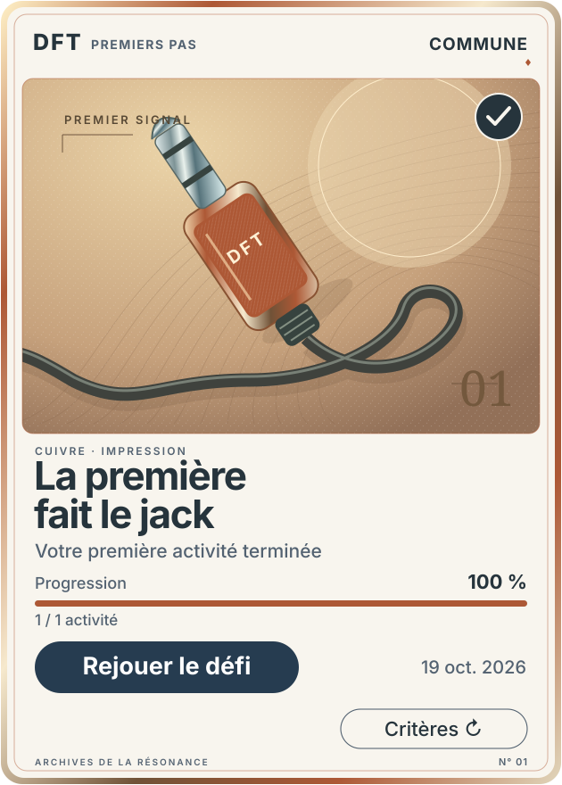
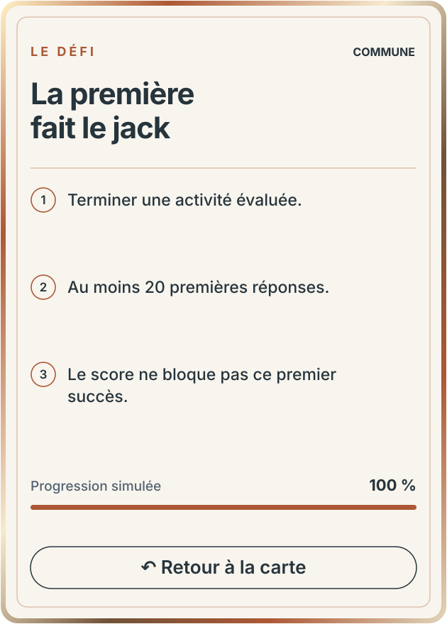
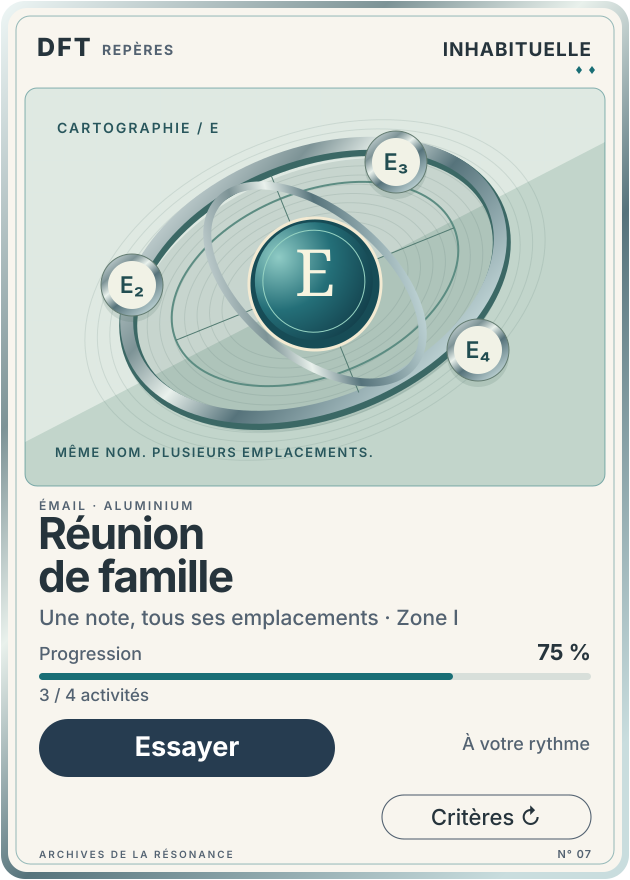
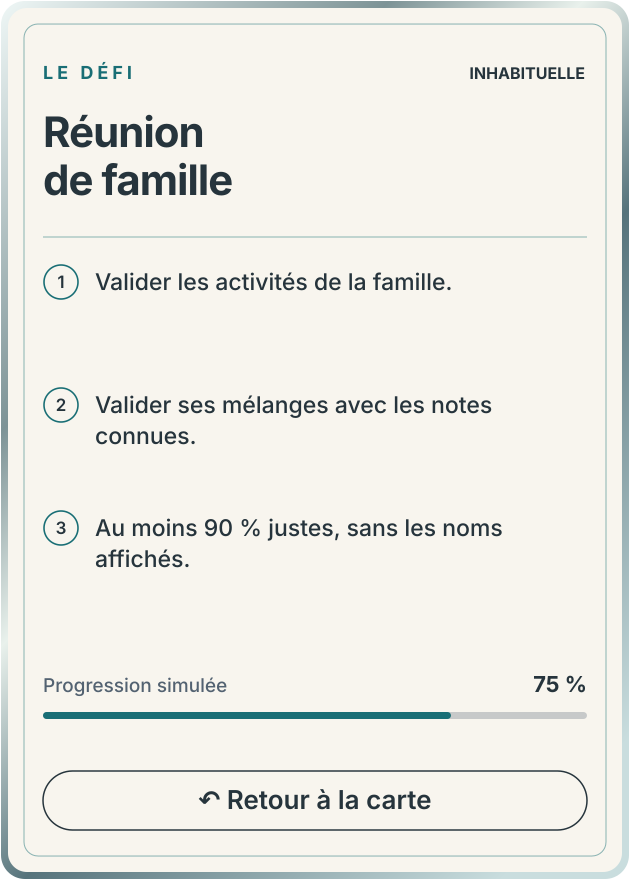
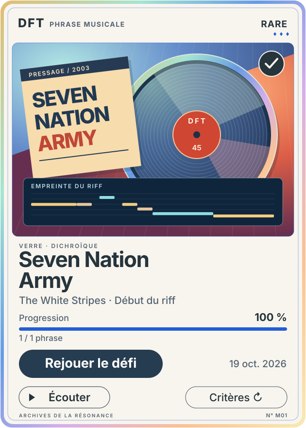
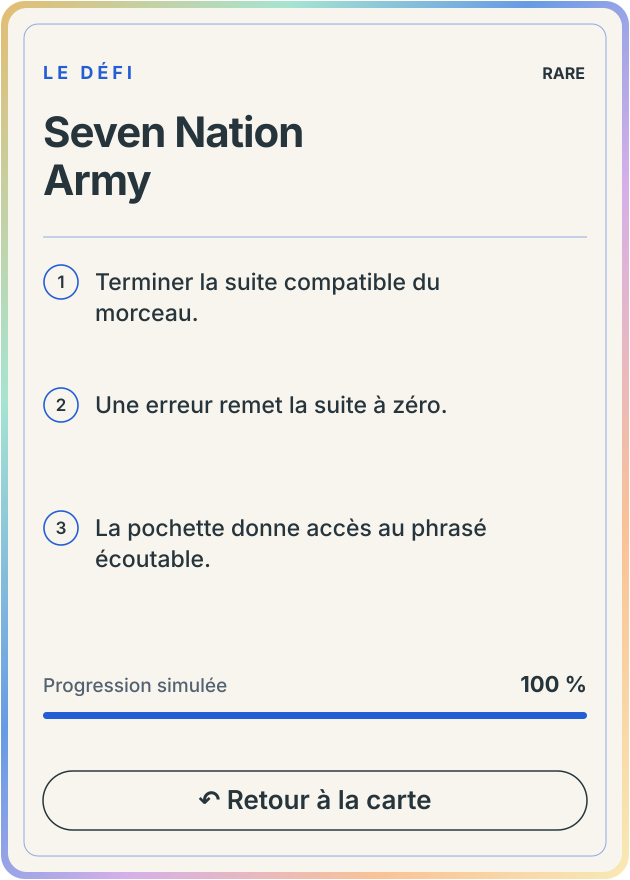
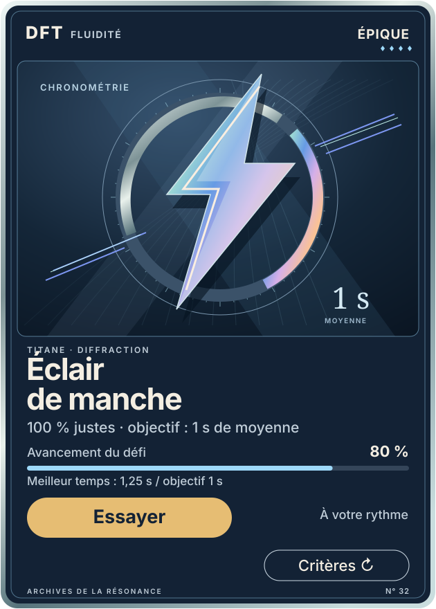
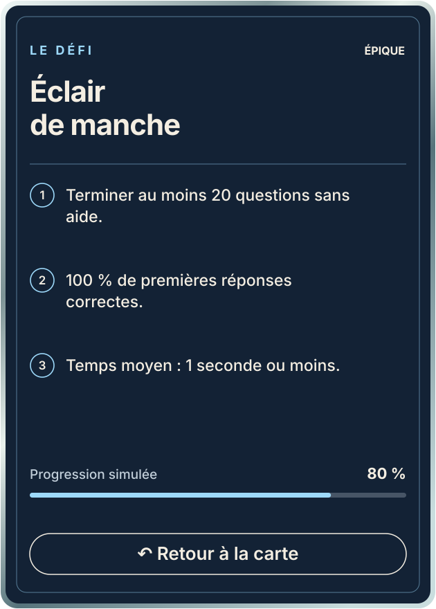
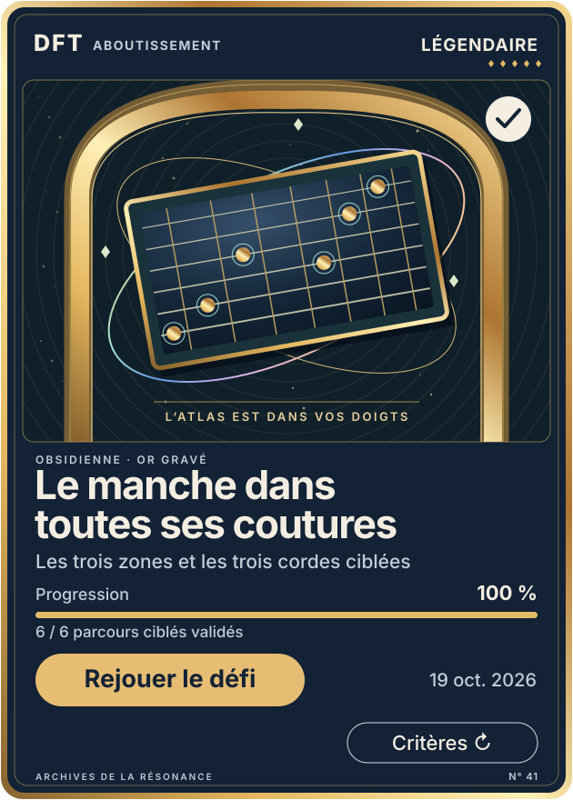
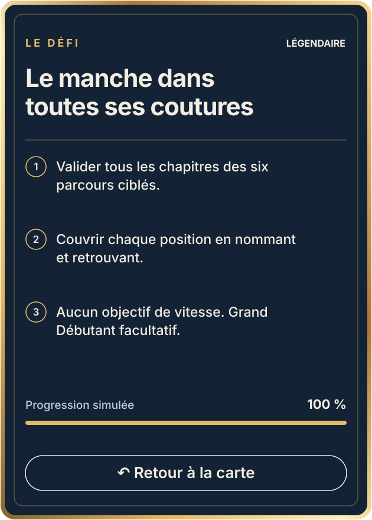

I
CUIVRE · IMPRESSIONCommune




Le premier geste mérite déjà un bel objet : câble souple, prise sculptée, cuivre et papier gravé.
Collection de succès / proposition 01
Cinq raretés. Cinq matières. Des objets sonores qui racontent une réussite et donnent envie de garder sa trace.


Le premier geste mérite déjà un bel objet : câble souple, prise sculptée, cuivre et papier gravé.


La matière gagne un deuxième plan : orbites d’aluminium, émail profond, positions reliées autour d’un même nom.


La pochette devient une pièce pressée : disque dichroïque et empreinte MIDI réelle du riff stocké dans la bêta.


Le défi change d’échelle : titane, diffraction et lumière tendue pour représenter la précision sous contrainte de temps.


L’aboutissement devient un objet monumental : portail d’or, constellation et atlas. Aucun chrono n’est exigé pour cette carte.
Une identité commune, cinq constructions. La gravure, le cadre et la ligne de résonance relient la série. Chaque objet change de composition, de profondeur et de finition. Les matières restent à l’écart des textes et des contrôles.
À regarder en priorité : l’attrait de la Commune, la différence entre Rare et Épique, la lisibilité du titre et de l’action, puis l’envie de collectionner les autres pochettes. Le catalogue détaille les conditions réelles, les preuves disponibles et celles à ajouter.